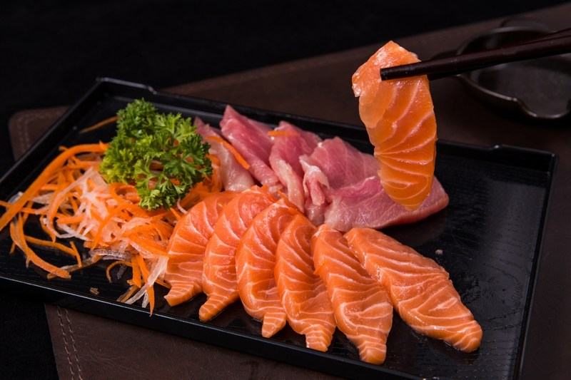

Sashimi
- Sashimi é uma iguaria da culinária japonesa que consiste de peixes e frutos do mar muito frescos, fatiados em pequenos pedaços e servidos apenas com algum tipo de molho (geralmente shoyu, pasta de wasabi, condimentos como gengibre fresco ralado ou ponzu), e guarnições simples como shiso e raiz de daikon fatiada.
Ingredientes
- 500g de salmão fresco fatiado bem fininho (utilize uma faca afiada e antes de fatiar, sempre esfregue limão na lâmina para uma fatia não colar na outra);
- 1 xícara (café) de shoyu;
- 1 colher de sopa de gengibre fresco ralado.
Modo de Preparo
- Fatie o salmão utilizando uma faca afiada e a cada corte esfregue uma banda de limão na faca para não grudar o peixe;
- Rale o gengibre;
- Misture com o shoyu;
- Coloque a mistura num recipiente e deixe o peixe marinando por 15 minutos;
- Sirva de preferência com arroz japonês (gohan).